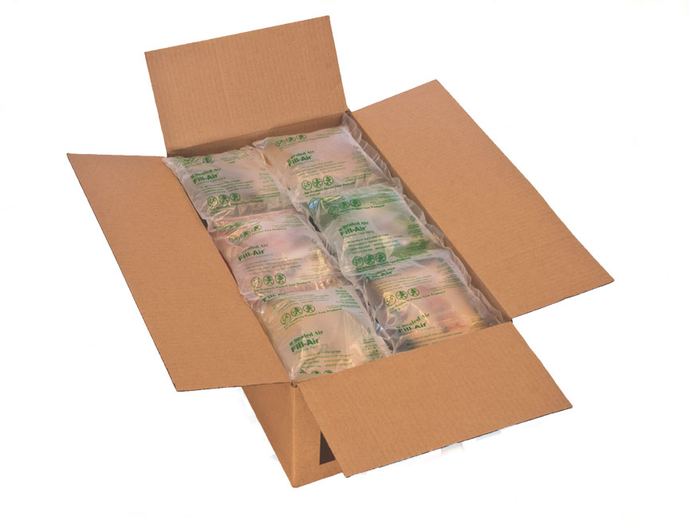
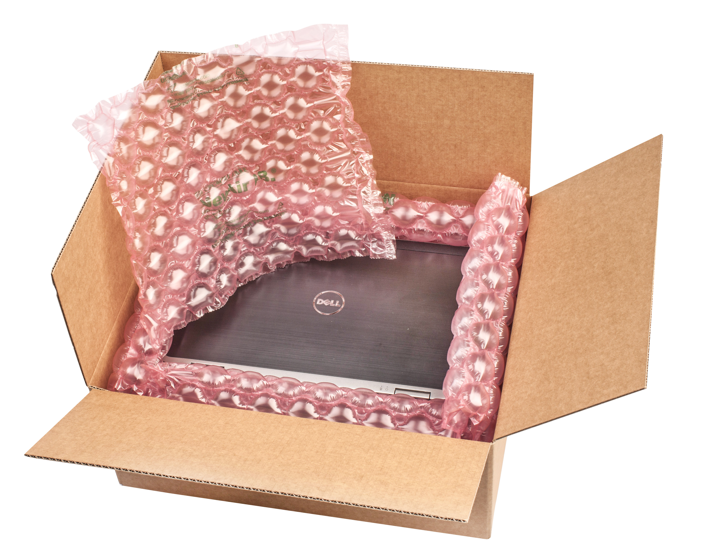

Fill-Air Rocket - system poduszek powietrznych
System poduszek powietrznych jest bardzo skutecznym i ekonomicznym rozwiązaniem mającym na celu unieruchomienie produktów w kartonie oraz wypełnienie wolnej przestrzeni w opakowaniu zbiorczym. Worki powietrzne dostępne są w kilku różnych rozmiarach. Małe poduszki pozwalają wypełniać niewielkie przestrzenie, natomiast duże dają możliwość szybkiego i ekonomicznego wypełnienia większych objętości. Urządzenie Fill Air-Rocket jest szybkie, łatwe w obsłudze, bardzo niezawodne i zajmuje mało miejsca
Korzyści płynące ze stosowania wypełniaczy powietrznych:
- skuteczne zabezpieczenie produktów przed przemieszczaniem wewnątrz kartonu,
- wypełnienie wolnej przestrzeni w kartonie zabezpiecza go przed zgnieceniem podczas transportu,
- szybkość i łatwość pakowania,
- ograniczenie kosztów magazynowania, gdyż folia przed napompowaniem zajmuje bardzo mało miejsca,
- ograniczenie kosztów transportu, gdyż poduszki powietrzne są najlżejszym materiałem wypełniającym
• poduszka wypełniająca 200x130 (najbardziej popularny)
• poduszka wypełniająca 200x200
• poduszka wypełniająca 350x200
New Air Express - system amortyzujących mat powietrznych
Mata powietrzna jest produkowana przez urządzenie NewAir Express poprzez nadmuchiwanie odpowiednio przygotowanej folii. Maty powietrzne skutecznie amortyzują produkt zabezpieczając go w ten sposób przed zniszczeniem w transporcie. Można nimi wykładać karton przed włożeniem produktów, owijać wyroby, separować nimi jeden produkt od drugiego. Dostępne są w dwóch szerokościach i kilku rozmiarach pęcherzyka. Urządzenie NewAir Express jest łatwe w obsłudze, niezawodne, mobilne i jest wyposażone w system nawijania rolek gotowej maty powietrznej.
Korzyści płynące ze stosowania amortyzujących mat powietrznych NewAir Express:
- doskonała amortyzacja i ochrona produktów w transporcie,
- szybkość i łatwość pakowania,
- ograniczenie kosztów magazynowania, gdyż folia przed napompowaniem zajmuje bardzo mało miejsca,
- produkowane wtedy kiedy są potrzebne, "just-in-time",
- folia NewAir Express jest folią barierową długo utrzymującą powietrze wewnątrz maty, jest wytrzymała - poszczególne pęcherzyki nie pękają.